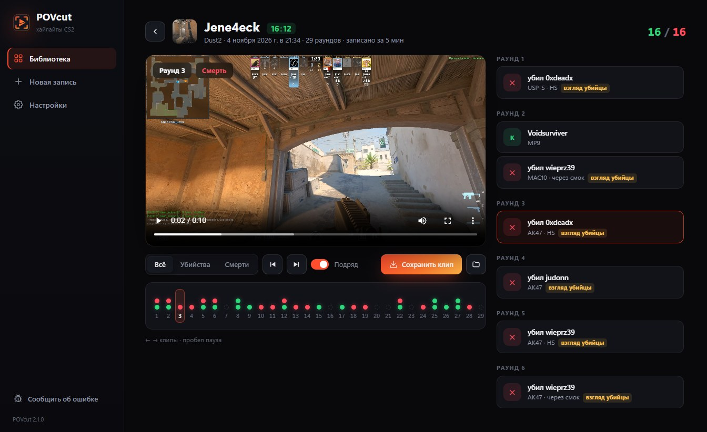
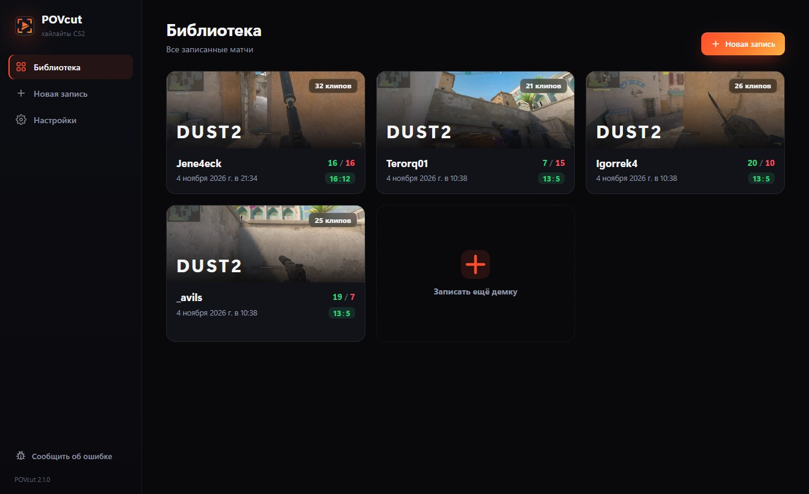
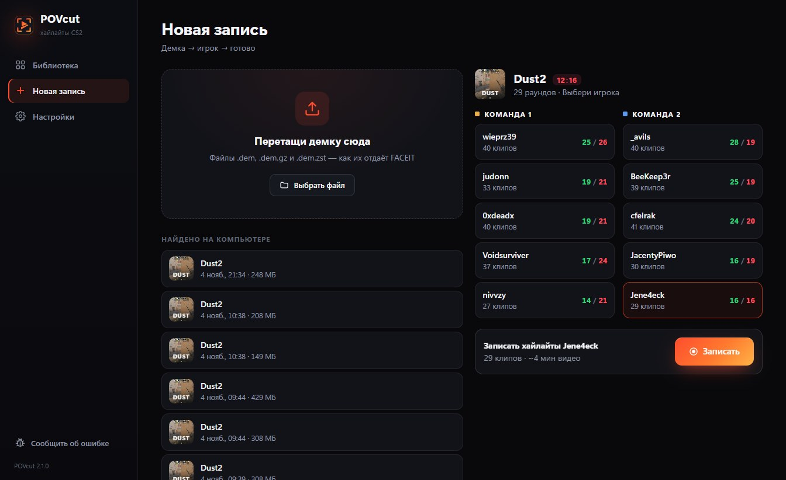
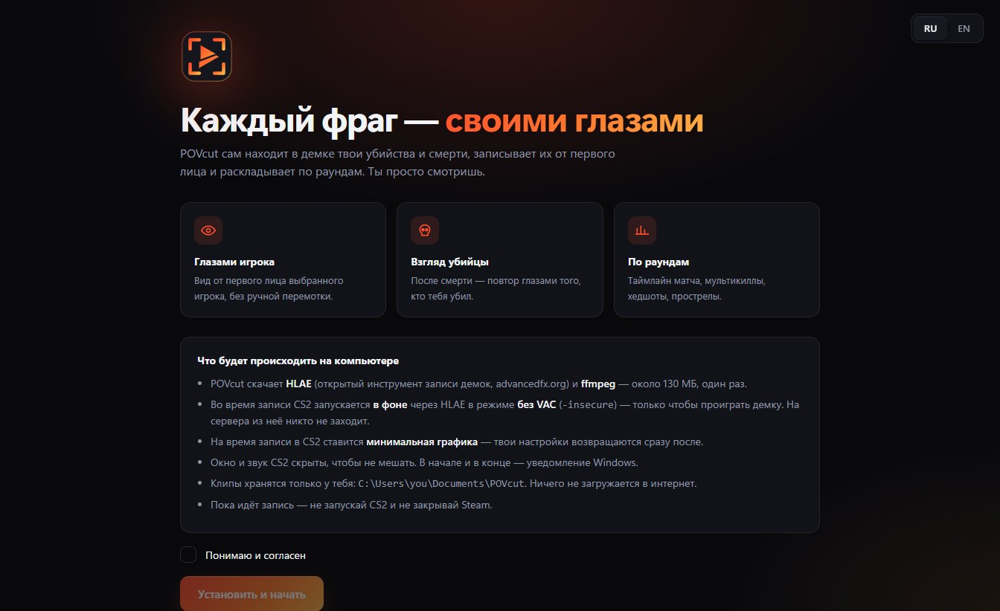

Раньше программа называлась Killcam — это она же, просто новое имя.
Formerly known as Killcam — same app, new name.
POVcut сам находит в демке CS2 все убийства и смерти игрока, записывает их от первого лица и раскладывает по раундам. После смерти — повтор глазами убийцы.
POVcut finds every kill and death of a player in a CS2 demo, records them first-person and lays them out round by round. After a death — a replay through the killer's eyes.

Без перемотки демки руками и без монтажа.
No manual demo scrubbing, no editing.



POVcut запускает отдельную копию CS2 через HLAE в режиме -insecure только чтобы проиграть демку. VAC в этом режиме выключен, на сервера из неё никто не заходит. Твоя обычная CS2 не меняется.
POVcut starts a separate CS2 through HLAE in -insecure mode only to play the demo. VAC is off in that mode and it never joins servers. Your normal CS2 is untouched.
У программы пока нет платной цифровой подписи. Нажми «Подробнее» → «Выполнить в любом случае».
The app isn't code-signed yet. Click "More info" → "Run anyway".
В «Документы\POVcut». В интернет ничего не загружается.
In Documents\POVcut. Nothing is uploaded anywhere.
CS2 не умеет проигрывать демки, записанные до своего последнего обновления. Возьми свежую демку — или жди патча от Valve.
CS2 can't play demos recorded before its latest update. Use a fresh demo or wait for a Valve patch.
Кнопка «Сообщить об ошибке» слева внизу в программе — логи придут нам сами. Или пиши в Discord.
Use "Report a problem" at the bottom-left of the app — logs reach us automatically. Or ping us on Discord.
Скачай, перетащи демку — через минуту первые клипы.
Download, drop a demo — first clips in a minute.
Скачать POVcutDownload POVcut